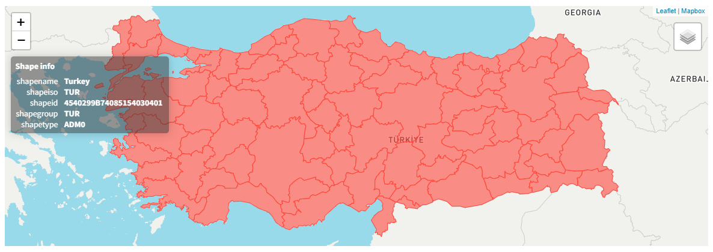
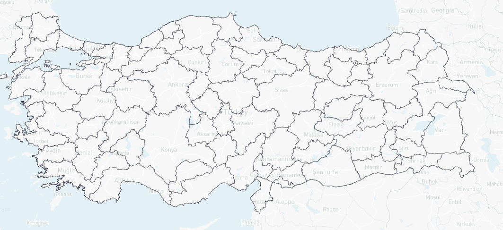
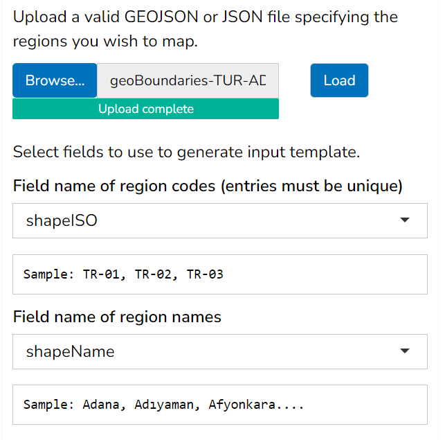
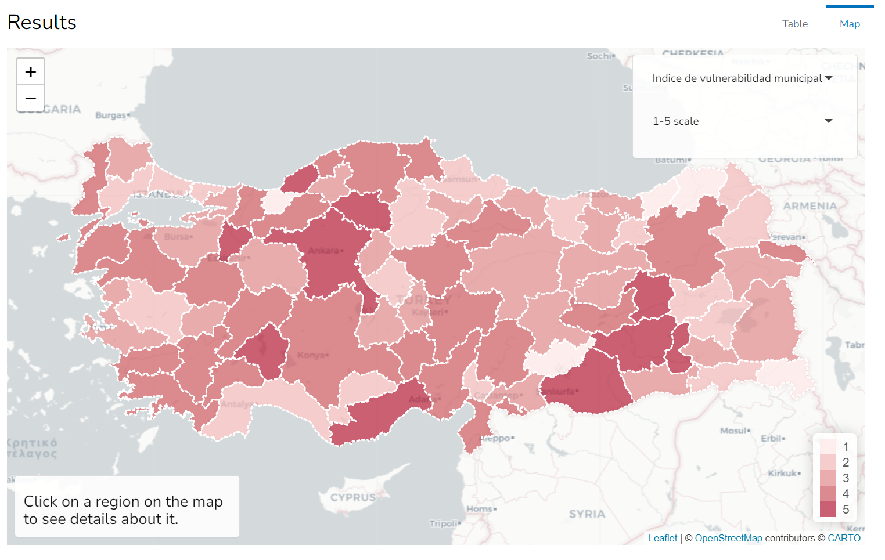

4 User geometry
As mentioned in the previous chapter, the A2SIT app now allows users to upload their own geometry files. This allows the app to be used with any data set, for example for countries not currently supported by the app, for international (country-level) data, and in fact for any collection of geographical features.
Uploading user geometry is an advanced feature which requires some knowledge of geographical file types. If you simply want to use the app with one of the supported countries you can safely skip this chapter.
To use this feature, turn on the “Shape file upload” switch on the Upload tab. This reveals some user input options: an upload field for your geometry file, and dropdown menus for region codes and names. The steps to use this feature are:
- Acquire the geometry that you wish to use with the app, potentially converting file type if necessary.
- Upload to the app.
- Tell the app which fields are to be used as region codes and names
- Download the data template from the app, which will be generated using your geometry file
- Enter your data, upload back to the app, and proceed using the rest of the app features. The user geometry will subsequently be used for mapping in the app.
4.1 Acquiring geometry
At the moment, the app is set up to take only .geojson or json files. Any collection of spatial polygons can used, for example:
- Admin 2 regions
- Sub-national boundaries
- National boundaries
Note that the app expects polygons, so you cannot include points or lines in the geometry file.
Acquiring the geometry file is the responsibility of the user, but geometry files are available from many different sources. One source which has been useful in the A2SIT project is the Humanitarian Data Exchange (HDX) which contains a wealth of data sets including administrative boundaries in various formats. Using the search filters, for example, we can sort to geojson files of adminstrative boundaries. As an example, we will download the subnational boundaries of Türkiye.

Using the HDX viewer we can already preview the contents of the file. We select the Admin 1 level data set, and download the geojson file.
When uploading geometry to the A2SIT app, simplified geometry is often preferable because it has a smaller file size and reduces processing time. The A2SIT app has a maximum file upload size of 30MB.
4.2 Previewing/adjusting/converting
It is usually a good idea to preview your geometry before entering it into the A2SIT app. One great resource for this is Mapshaper which lets you upload and view geometry files in various formats. It also offers the possibility of conversion, e.g. from .shp to .geojson, and to simplify the geometry (i.e. reduce the file size). These options are very useful depending on the source of your data.

Mapshaper will also check for line intersections. In short, if your geometry has problems in Mapshaper, it probably won’t work with the A2SIT app.
4.3 Uploading to the app
With our tested geojson file in hand, we can upload to the app. To do this, we use the upload box and click “Load”. If the file is successfully loaded and recognised, the next thing to do is to tell the app which fields in the geojson file should be used as the codes and names assigned to each geographical region. This is important because the codes will be used in the data template, and the names will be used in profiles, mapping and elsewhere. Ideally, the codes should be short alphanumeric codes which identify each region. Codes must be unique, as they are used as the identifiers for data processing within the app. The names should ideally be the name of each region, but have no particular restrictions.

In the Türkiye example, we select the “shapeISO” field as the code, and the “shapeName” field as the names. If no suitable codes are available, you can select “AppGeneratedCode” which is a sequence of unique codes generated by the app. This may also be used as the region names if nothing else is available.
4.4 Template generation and data upload
From this point, the app should behave exactly the same as if one of the built in countries (geometry files) were selected. The next step should be to download the template by clicking “Download country template”.
Particularly when using user-uploaded geometry, it may be useful to turn on the “Populate with fake data” switch, which will fill in the template with some random numbers. This allows you to immediately re-upload the template to the app for testing, to make sure your geometry, codes and names all agree with what you expect.
In the Türkiye example, we indeed populate the template with fake data. This results in the following:

Recall that these results are simply random numbers for testing and demonstration. However, the test confirms that the geojson file is recognised, and the names and codes are what we would expect. In practice you should of course carefully populate the template with your own indicator data.
4.5 Summary
Once the geometry has been successfully uploaded, the app will have all of the features available as if it were using built-in geometry.
Uploading user geometry is an advanced feature which requires some user knowledge and discretion. It is recommended to check and verify your geometry file as much as possible before uploading it to the app. The app will try to issue helpful error messages where possible, but there are many possible sources of errors in this process.
If you encounter further problems in upload, it may help to know that the geometry file is read in using the st_read() function from R’s sf package. Information about this function, and the package, can be found here.